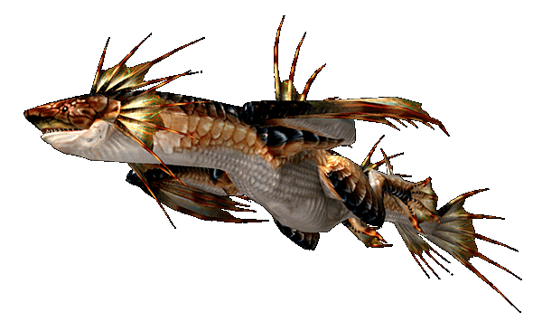

Index
|
|---|
About Wyverns
As i've stated before Monster hunter (here on abbreviated as MH) is a game where you have to kill mosters, customize your hunter and collect the best weapons by killing and carving monster body parts.The game consists of various monsters(wyverns and dragons) which is your duty to kill.The most important type of "monsters" are wyverns, since these are the monsters you will be trying to kill the most. Wyverns are exactly like dragons but have only two legs.
Some of these can be very difficult to overcome.This web page will give a description
of these various creatures and the items they have to offer.Oh yes,and before i forget,In MH you have Rankings which are called Hunter Rankings(Hr).The highest HR is 20 and the items and Monsters change when you turn from HR-12 to HR-13.You obtain HR by getting experience and you get Experience from completing Quests.
Now for the fun part:Below is given the various wyverns you'll encounter.
- Rathalos
- Male wyvern that keeps a nest and patrols is patch of territory from the air in search of prey.it's claws are filled with a poison that weakens its quarry.
Carve items (Offline and Hr -1 to12):
Body Carves:
Rathalos shell - 5%
rathalos webbing - 30%
Rathalos shell - 25%
Flame Sac - 8%
Wyvern Marrow - 2%
Tail Carves:
Rathalos scale - 35%
Rathlos tail - 38%
Rathalos shell - 25%
Wyvern Marrow - 2%
Carve items(Hr 13+):
Body carves:
Rathalos Scale - 5%
Rathalos webbing - 30%
Rathalos Sell - 30%
Flame Sac - 25%
Wyvern Marrow - 8%
Rathalos wing - 2%
Tail Carves:
Rathalos Plate - 1%
Rathalos Tail - 55%
Rathalos shell - 30%
Rathalos Scale - 8%
Wyvern Marrow - 6%
Note: Cutting off the wing claws generally results in a rathalos claw on the rewards screen. Menu
- Rathian
Female version of the Rathalos Wyver. Unlike its male counterpart, it usually patrols its territory from the ground.its tail spikes are filled with poison.
Carve items (Offline and Hr - 1 to 12):
Body Carves:
Rahian shell - 30%
Rathian scale - 60%
Flame sac - 8%
Rathian spike - 2%
Tail Carves:
Lg Monster bone - 5%
Rathian Scale - 60%
Rathial shell - 25%
Rathian spike - 8%
Wyvern marrow - 2%
Carve items (Hr 13+):
Body Carves:
Rathian scale - 35%
Rathian shell - 30%
Flame sac - 25%
Rathan spike - 8%
Wyvern Claw - 2%
Tail Carves:
Rathian Plate - 2%
Rathian scale - 50%
Rathian shell - 30%
Rathian spike - 15%
Wyvern Marrow - 5%
Note: cutting off the wing claws generally results in a rathian claw on the rewards screen. Menu
- Yian Kut - ku
A bird like Wyvern with a huge beak and large ears that splay open when it is angered.With it's sensitive Hearing it dislikes Loud noises.it is smaller But faster than most wyverns.
Carve items (Offline and Hr - 1 to 12):
Kut-ku Webbing - 36%
Kut - ku Shell - 50%
Kut -ku Scale -5%
Kut-ku ear - 8%
Giant beak - 1%
Carve items (Hr 13+):
Kut-ku ear - 20%
Kut-ku Webbing - 25%
Kut-ku Shell - 45%
Giant Beak - 10%
Note:His Sign Of weakness is his ears dropping and the best weapon to use on him would be the lance and Winglock. Menu
Diablos
A two horned wyvern found in desert zones. They are capable of burrowing into the sand to attack prey from below. It has been confirmed that they have a subspecies called Monoblos.
Carve items(Offline and Hr - 1 to 12):
Body carves:
Blos fang - 30%
Diablos Shell - 70%
Tail Carves:
Diablos Shell - 70%
Diablos Tail - 30%
Carve items:(Hr-13+):
Body Carves:
Blos fang - 15%
Diablos Shell - 40%
Diablos Spine - 45%
Tail Carves:
Diablos Shell - 40%
Diablos Tail - 60%
Note:Cutting off the horn offline or HR 1-12 results in:
Twisted Horn - 95%
Majestic Horn - 5%
Cutting off the horn HR 13+ results in:
Twisted Horn - 88%
Majestic Horn - 12% Menu
- Gypceros
- A wyvern that can generate bright flashes of light with its prominent Headcrest. Its rubbery skin resists damage and it can spit a poisonous substance.It is quite timid however.
Carve items (Hr - 1to 12):
Poison sac - 10%
Power Extract - 20%
Rubbery Hide - 62%
Lightcrystal - 8%
Carve items(Hr - 13+):
Power Extract - 50%
Rubbery Hide - 35%
Poison sac - 9%
Lightcrystal - 6%
Note:Cutting off the head crest offline or HR 1-12 will result in
either:
5 Stones - 99%
1 Lightcrystal - 1%
Cutting off the head crest HR 13+ will result in either:
1 Machalite Ore - 70%
1 Lightcrystal - 29%
1 Novacrystal - 1%
Menu
Khezu
- Loathsome wyverns that live inside caves.Being Blind, they detect their prey by smell.They are capable of generating electric shocks, which the use to paralyse their prey.
Carve Items(Offline HR - 1 to 12):
Electro sac - 15%
Flabby Hide - 50%
Pale Extract - 35%
Carve items(Hr - 13+):
Flabby Hide 50%
Pale Extract - 25%
Pale Bone - 10%
Electro sac - 14%
Pale Lips - 1%
Note:There's nothing really to say about Khezu, other than the
fact that he's really nasty looking. And his looks are also
part of an ongoing discussion on what he really looks like.
I'll leave that part up to your imagination rather than
elaborate on it further. And contrary to what many people
believe, Khezu IS weak versus Fire. Menu
- Monoblos
- A large-horned wyvern found in desert zones. Their giant horn makes their
attacks very dangerous. While they have no breath attack, their ear-splitting
roar is the bane of hunters.
Carve items (OFFLINE ONLY):
Body:
Monoblos Spine - 40%
Monoblos Shell - 39%
Blos Fang - 20%
Monoblos Heart - 1%
Tail:
Monoblos Shell - 80%
Lg Monster Bone - 20%
Note: Cutting off the horn will result in a Crimson Horn 100% of
the time. Menu

- Plesioth
- An enormous, aquatic wyvern with wings that have evolved into fins
for swimming. Although superficially fish-like, they can move on land
as well. They love frogs.
Carve items (HR-1 to 12):
Plesioth Scale - 58%
Plesioth Fin - 40%
Plesioth Scale - 8%
Carve items (HR-13+):
Plesioth Fin - 48%%
Plesioth Scale - 45%
Lg Lobstershell - 7%
Note:: A very tough wyvern. CAPCOM seems to have messed up a bit on
the hit zone of his tail, so unfortunately, you can get hit
by it if you're really not even that close to it. Be careful.
His major weakness is, you got it, Lightning! Also remember
that Sonic Bombs are your friend on a Plesioth since it'll
get him out of the water. Also Frogs are good to have to
lure him out as well. The sign that it is weakening is
you will see its fin collapse. Menu
- Cephadrome
- The alpha monster form of the Cephalos. Larger and armored with black
scales, they fit the appearance of a leader perfectly. Their fins hold
a paralyzing toxin.
Carve items (HR-1 to 12):
Piscine Liver - 15%
Cephalos Scale - 38%
Cephalos Fin - 32%
Piscine Fang - 15%
Carve items (HR-13+):
Cephalos Scale - 45%
Cephalos Fin - 45%
Piscine Liver - 8%
Piscine Fang - 2%
Note:Sonic Bombs to get them to pop out of the sand, just like
with the Cephalos. And again, it's weak versus the Thunder
element. The sign of its weakness is when its fin collapses. Menu

- Gravios
- A large wyvern found in volcanic zones. They possess a fiery breath attack
and the ability to emit a sleeping gas. They also have extremely hard scales
that deflect most weapon attacks.
Carve items (HR-1 to 12):
Body:
Gravios Shell - 75%
Sleep Sac - 15%
Flame Sac - 10%
Tail:
Gravios Shell - 80%
Lg Monster Bone - 20%
Carve items (HR-13+):
Body:
Flame Sac - 9%
Gravios Carapace - 45%
Gravios Shell - 20%
Sleep Sac - 20%
Gravios Head - 4%
Gravios Wing - 2%
Tail:
Gravios Shell - 35%
Gravios Carapace - 63%
Firestone - 2%
Note:You can cut open the Gravios's chest area. This will become
a really good weak spot for you to attack. He will fall
rather fast when you open his chest. Menu
- Basarios
- A large wyvern found in volcanic zones. They are the juvenile form of the
Gravios. They have a steel-like carapace that requires powerful weapons to
crack. Emits poison gas.
Carve items (HR-1 to 12):
Body:
Poison Sac - 15%
Machalite Ore - 45%
Basarios Shell - 32%
Lg Monster Bone - 8%
Tail:
Basarios Shell - 45%
Machalite Ore - 55%
Carve items (HR-13+):
Body:
Poison Sac - 15%
Dragonite Ore - 32%
Basarios Shell - 30%
Basarios Wing - 15%
Lg Monster Bone - 8%
Tail:
Machalite Ore - 45%
Basarios Shell - 30%
Dragonite Ore - 25%
Note:: As with Gravios, you can cut open the chest plate of the
Basarios, lowering its defense in that area greatly. Menu
| | | | Well, those are the Wyverns.Hope you enjoyed that. |
|